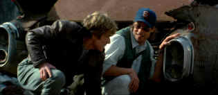

| Spy Game/ B-,A |
| Universal/2001/127/ANA 2.35 |
Spies are not born, they're made. Spy
Game basically takes that premise and runs with it, all over the
place. The episodic nature of Spy Game makes it a difficult
mission. Flow is constantly impeded. There's something patently false
about all the CIA conference room machinations. There's also a lack of
balance between the segments. It's not that one is so powerful that's it
overshadows the rest; it's more that the fragments fail to build upon one
another, which is clearly the exercise the script had in mind.
 |
|
Posed as Butch and Sundance?
©Universal
|
On his last day at the CIA Nathan Muir gets a
Hong Kong wake-up call. Tom Bishop, an agent closely associated with Muir
is in trouble. When Muir arrives at CIA headquarters in Langley, he's not
surprised when unctuous superior Charles Harker greets him with a request
for Bishop's files. Muir gets pulled the situation even as he contemplates
delights of sunny retirement.
Locations from Vietnam to Germany to China to Beirut
are bound by a thin thread at CIA headquarters. A political chess game is
in play as Muir dances around the board avoiding full disclosure to his
superiors. The expository anchor that gradually reveals the Muir/Bishop
relationship simply weighs down the narrative.
The Vietnam segment is symptomatic of the
problems of the script. It's uninvolving. You never get a chance to
understand the characters. There's no chance to feel the place and time.
The audience is dropped into Vietnam with the same nonchalance of a
helicopter dumping psy-op leaflets. Beirut runs long and out of balance
with the other segments. China plays strong and Berlin plays boring.
Robert Redford fails to find a sharp edge that
would make Nathan Muir a more compelling character. He may banter with
cynical dialogue, but it rings hollow. Brad Pitt turns up the boyish
charm for Tom Bishop to an artificial degree, especially in his scenes
with Redford. One supposes the filmmakers would have loved to find a
Butch/Sundance chemistry between Redford and Pitt, but it's nowhere to be
seen. Supporting roles are poorly developed
Spy Game is a fine production. It's very well
filmed. The excellent cinematography attempts to define various locales
with distinct lighting tones and this works quite well. Production design
is meticulous. Director Tony Scott injects good movement and energy into
the film, but the script is a heavy chain impeding the director's nimble
instincts. It plays with the same off-putting self satisfaction which is
the chief characteristic of Muir's adversary Charles Harker.
Spy Game tries desperately to be hip. The music
has a hip beat, the dialogue dangles hip, but the sum is not hip.
The staging at Langley is stiff. I am not even sure that the core
premise is reasonable. Why are they bothering to build a psychological
profile of Tom Bishop? The sum of its shortcomings is that Spy Game
fails to build a consistent tension. It plays very evenly with no
crescendos.
The elegant production
has been turned into a beautiful Spy Game DVD. Blacks are deep and
richly defined accompanied by fine shadow detail. Contrast range is
excellent. Light output is powerful in every situation. Color is very
accurate. No evident artifact motions even in difficult camera
pans. Image depth is created through fine rendering of detail.
Reproduction of textures is very pleasing with extremely stable small
details. The operations and conference rooms are delivered with a
beautiful range of detail. Minor evidence of high peak transition ringing,
but the overall verdict is not guilty. Grain is well-handled in the
long-lens shots. Lighting is excellent through all the varied
schemes. Nice open DTS 5:1 presentation with fine, aggressive
directionality. Tight bass impact.
Universal has cloaked Spy Game with special edition
armor. Separate commentaries from director Tony Scott and producers Marc
Abraham and Douglas Wick are included. There are also deleted
scenes and alternate versions with director Tony Scott commentary. Scott
also gives insights into the script-to-storyboard
process and his process of thought. The clandestine ops feature allows you
to access scene specific details about the filmmaking process while
watching the feature. If you're looking forward to more spy stuff, the
trailer for Universal's new thriller The Bourne Identity is
included too. |
|
|
|
 
ISF Monitor
Calibrations in the Tristate New York area. Lots of hardware
info and frequent hardware peaks from video expert Kevin Miller. They may
be judgmental, but that's the point, isn't it. Lots of DVD reviews plus
news and more.
 The Cinematheque is a cultural,
arts organization that programs year-round specialty film series at the
newly renovated, landmark 1922 Egyptian Theatre on
Hollywood Boulevard! The Cinematheque is a cultural,
arts organization that programs year-round specialty film series at the
newly renovated, landmark 1922 Egyptian Theatre on
Hollywood Boulevard!
 Have you visited
Home Theater
Talk lately? One of the friendliest places on the Net for Home
Theater and DVD discussion, you can get help for installation problems or
simply share your opinions with other Vidiots. Have you visited
Home Theater
Talk lately? One of the friendliest places on the Net for Home
Theater and DVD discussion, you can get help for installation problems or
simply share your opinions with other Vidiots.

The Movie Poster
Archive includes extensive poster images from the films of stars like
Susan Hayward, Kirk Douglas, Katharine Hepburn and many more. Our
featured star is Tyrone Power.

Runaway Train/B+,B

From an Akira Kurosawa screenplay. Jon Voight is fantastic as fierce
habitual criminal Oscar "Manny" Mannheim. A smile to
remember with ferocious non-stop action.

Selections from the Feature
Archive include articles on Akira Kurosawa, Blonde Bimbos, Frank Darabont, Steven Culp, John Herzfeld or Vietnam: The Hollywood Pariah, and many
more....
Director Walks the Wire
Balanced by an armor of movie lore and filmmaking daring,
director John Herzfeld is comfortable walking the high wire. Check out
this interview by Stu Kobak.
|